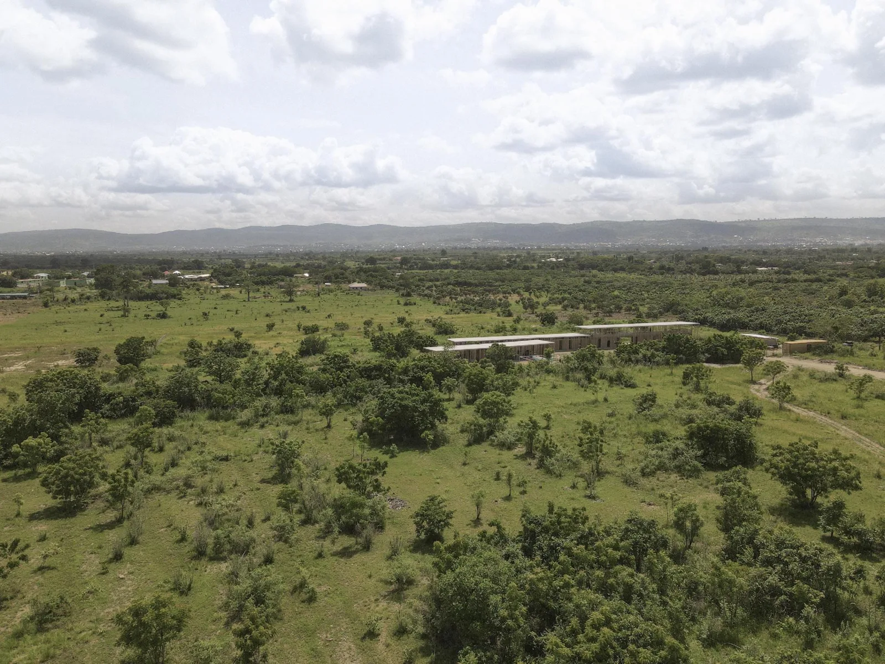
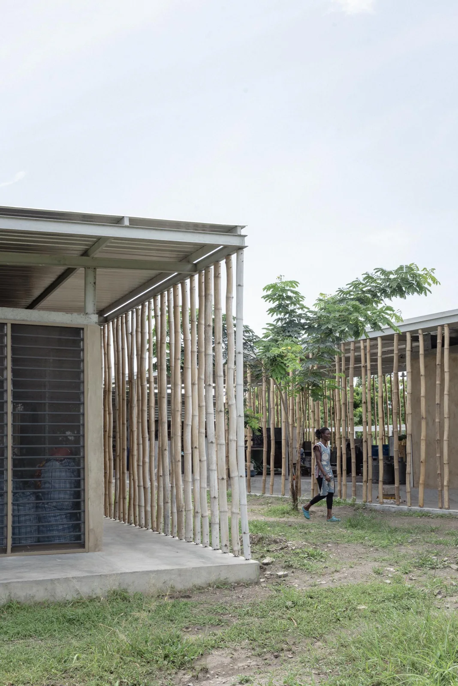
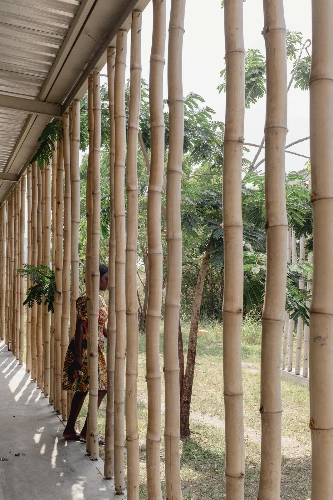
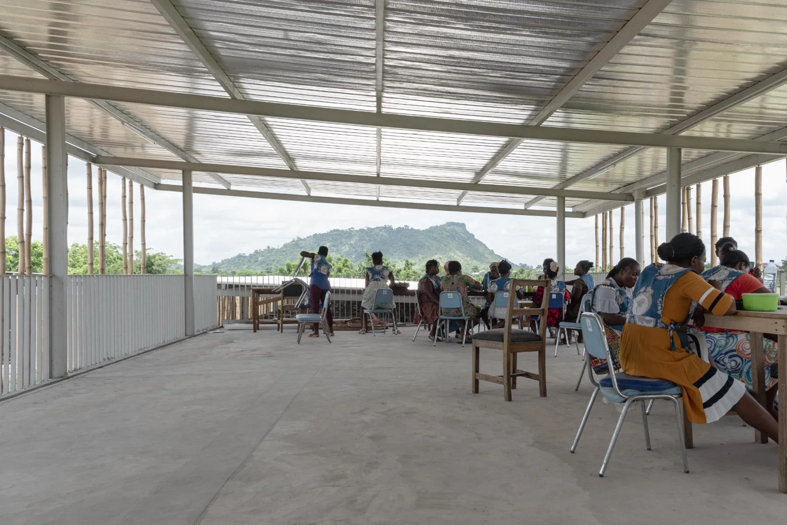
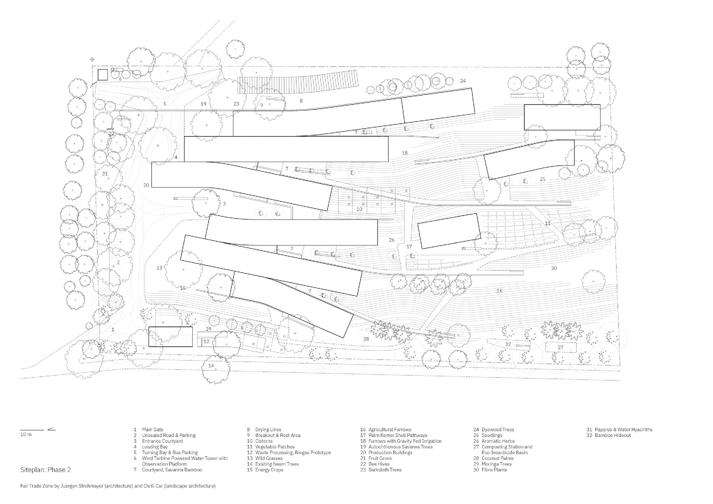
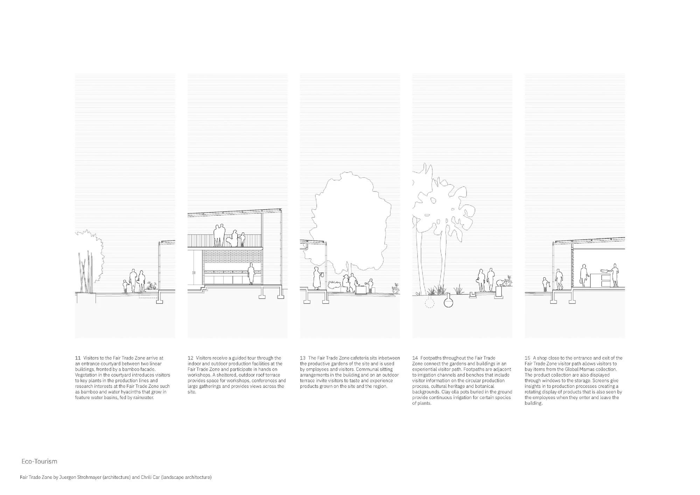
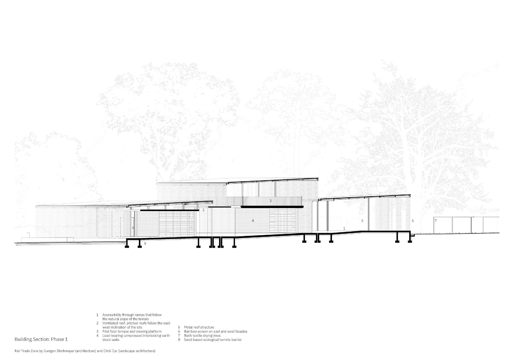
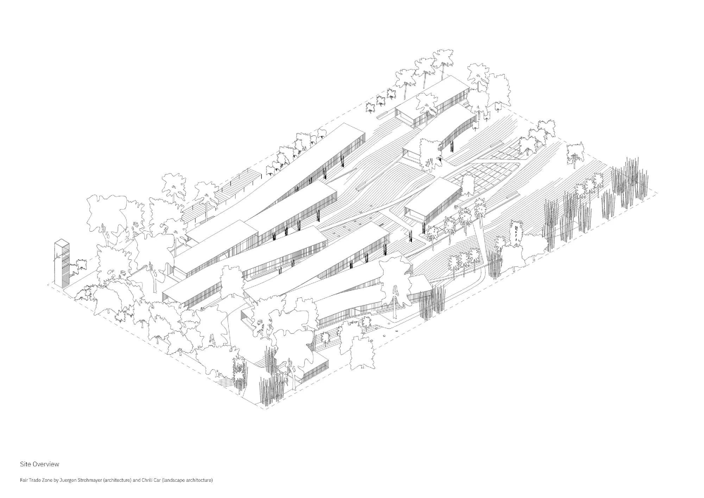

Production campus · 2022 (first phase)
Fair Trade Zone
TAELON7
Akuse, Ghana
The campus provides workspaces for a women-led cooperative producing textiles, skincare and paper products. Different production processes occupy modular wings, with gardens and shared outdoor spaces integrated into everyday working life.
Artisans helped shape layouts through collaborative workshops. Curving buildings follow the terrain; compressed-earth bricks and bamboo screens provide filtered light and natural cooling. The wider plan connects production to productive gardens, rainwater collection and wastewater treatment rather than treating the factory as an isolated shed.


Relevant connections
MAKE
Textile, papermaking and skincare work are the core activities of the cooperative's production campus.
Images and drawings / 08













